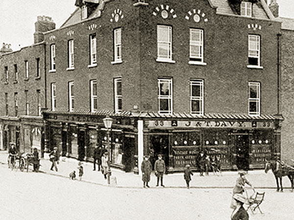

Commandant Michael Mallin and his second in command, Countess Markievicz, were assigned to the 20-acre St Stephen’s Green, just over one mile south of the GPO.
Mallin posted some ICA men in houses overlooking the Green while others dug trenches to cover the entrances. He dispatched men to take over Harcourt Street Station and J&T Davy’s pub in Portobello.
Mallin had served for more than a decade in the British army, but St Stephen’s Green was a vulnerable position as it was overlooked by the Shelbourne Hotel and the anti-Volunteer forces which had occupied it during Monday night.
The Green was abandoned on Tuesday when it came under fire from the Shelbourne. Presumably, there weren’t enough Volunteers to take the Shelbourne, or it was neglected in the planning. The majority of the ICA forces then set up at the Royal College of Surgeons immediately to the west of the Green. But as General Lowe concentrated on the GPO and the Four Courts, the College of Surgeons garrison was involved in little action until the Sunday surrender order.
